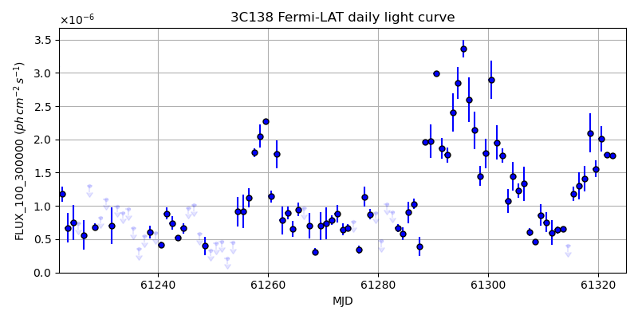
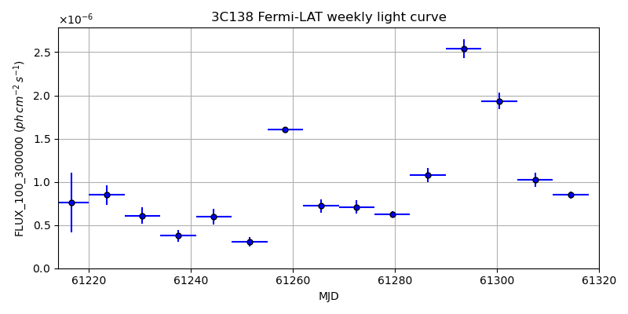
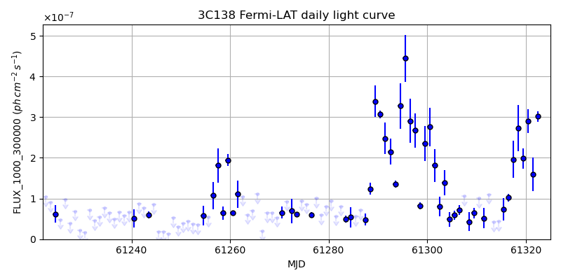
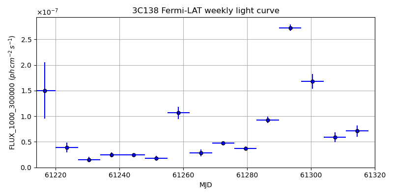

LAT Lightcurve site: https://fermi.gsfc.nasa.gov/ssc/data/access/lat/msl_lc/source/3C_138
NED: Query
Time of last update of this page: UT: 2026-10-10 15:16 (MJD: 61323.636)
| Property | Value |
|---|---|
| R.A. | 5:21:09.84 |
| Dec. | 16:38:20.4 |
| z | 0.759 |
| 3FGL SpectrumType | |
| 3FGL PL Index | -1.00 |
| 3FGL Flux_100_300000 | -1.00e+00 |
| 3FGL Flux_1000_300000 | -1.00e+00 |
| 3FGL Flux >200 GeV | -1.00e+00 |
| 3FGL Extrap. Crab >200 GeV | -1.00 |
| 3FGL Flux After EBL Absorption >200GeV | -1.00e+00 |
| 3FGL EBL Crab Fraction >200GeV | -1.00 |

| MJD | dMJD | Flux | dFlux | Frac3FGL | FracCrab>200GeV | EBLFracCrab>200GeV |
|---|---|---|---|---|---|---|
| 61318.50 | 0.50 | 2.09e-06 | 0.00e+00 | 0.00 | 0.00 | -0.00 |
| 61319.50 | 0.50 | 1.56e-06 | 0.00e+00 | 0.00 | 0.00 | -0.00 |
| 61320.50 | 0.50 | 2.01e-06 | 0.00e+00 | 0.00 | 0.00 | -0.00 |
| 61321.50 | 0.50 | 1.77e-06 | 0.00e+00 | 0.00 | 0.00 | -0.00 |
| 61322.50 | 0.50 | 1.76e-06 | 0.00e+00 | 0.00 | 0.00 | -0.00 |

| MJD | dMJD | Flux | dFlux | Frac3FGL | FracCrab>200GeV | EBLFracCrab>200GeV |
|---|---|---|---|---|---|---|
| 61286.50 | 3.50 | 1.08e-06 | 0.00e+00 | 0.00 | 0.00 | -0.00 |
| 61293.50 | 3.50 | 2.54e-06 | 0.00e+00 | 0.00 | 0.00 | -0.00 |
| 61300.50 | 3.50 | 1.93e-06 | 0.00e+00 | 0.00 | 0.00 | -0.00 |
| 61307.50 | 3.50 | 1.02e-06 | 0.00e+00 | 0.00 | 0.00 | -0.00 |
| 61314.50 | 3.50 | 8.49e-07 | 0.00e+00 | 0.00 | 0.00 | -0.00 |

| MJD | dMJD | Flux | dFlux | Frac3FGL | FracCrab>200GeV | EBLFracCrab>200GeV |
|---|---|---|---|---|---|---|
| 61318.50 | 0.50 | 2.73e-07 | 0.00e+00 | 0.00 | 0.00 | -0.00 |
| 61319.50 | 0.50 | 1.99e-07 | 0.00e+00 | 0.00 | 0.00 | -0.00 |
| 61320.50 | 0.50 | 2.90e-07 | 0.00e+00 | 0.00 | 0.00 | -0.00 |
| 61321.50 | 0.50 | 1.59e-07 | 0.00e+00 | 0.00 | 0.00 | -0.00 |
| 61322.50 | 0.50 | 3.02e-07 | 0.00e+00 | 0.00 | 0.00 | -0.00 |

| MJD | dMJD | Flux | dFlux | Frac3FGL | FracCrab>200GeV | EBLFracCrab>200GeV |
|---|---|---|---|---|---|---|
| 61286.50 | 3.50 | 9.28e-08 | 0.00e+00 | 0.00 | 0.00 | -0.00 |
| 61293.50 | 3.50 | 2.73e-07 | 0.00e+00 | 0.00 | 0.00 | -0.00 |
| 61300.50 | 3.50 | 1.68e-07 | 0.00e+00 | 0.00 | 0.00 | -0.00 |
| 61307.50 | 3.50 | 5.89e-08 | 0.00e+00 | 0.00 | 0.00 | -0.00 |
| 61314.50 | 3.50 | 7.11e-08 | 0.00e+00 | 0.00 | 0.00 | -0.00 |
--------------------------------------------------------- Using user-supplied coords: 5:21:09.84 16:38:20.4 2000 --------------------------------------------------------- FLWO UT night of: 2026-10-11 Local Sid. @ Midnight: 00:55 Sunset (-15.0) (local, UT): 19:04 02:04 Sunrise (-15.0) (local, UT): 05:18 12:18 Moonrise (local, UT): Moonset (local, UT): Moon phase: 0.01 --------------------------------------------------------- AzTime LSID UT Obj_el Obj_az Mn_el Mn_az Sep. --------------------------------------------------------- 19:04 19:58 02:04 -28.8 43.6 -16.1 264.2 120.3 19:34 20:29 02:34 -24.2 49.7 -22.3 267.8 120.6 20:04 20:59 03:04 -19.1 55.2 -28.5 271.5 120.9 20:34 21:29 03:34 -13.7 60.2 -34.7 275.4 121.2 21:04 21:59 04:04 -8.0 64.7 -40.8 279.7 121.5 21:34 22:29 04:34 -1.2 68.9 -46.8 284.6 121.8 22:04 22:59 05:04 4.1 72.8 -52.7 290.5 122.2 22:34 23:29 05:34 10.2 76.5 -58.4 297.7 122.5 23:04 23:59 06:04 16.4 80.2 -63.6 307.3 122.9 23:34 00:29 06:34 22.7 83.8 -68.1 320.3 123.2 00:04 00:59 07:04 29.1 87.6 -71.3 338.2 123.6 00:34 01:29 07:34 35.5 91.5 -72.6 0.4 123.9 01:04 01:59 08:04 41.9 95.7 -71.5 22.7 124.3 01:34 02:30 08:34 48.2 100.6 -68.3 40.8 124.6 02:04 03:00 09:04 54.4 106.4 -63.9 54.1 125.0 02:34 03:30 09:34 60.4 113.8 -58.7 63.8 125.3 03:04 04:00 10:04 66.0 123.9 -53.1 71.2 125.7 03:34 04:30 10:34 70.9 138.6 -47.3 77.2 126.0 04:04 05:00 11:04 74.2 160.1 -41.4 82.2 126.4 04:34 05:30 11:34 74.9 187.2 -35.3 86.6 126.7 05:04 06:00 12:04 72.7 212.0 -29.2 90.6 127.0 05:18 06:14 12:18 71.0 220.9 -26.5 92.4 127.1 --------------------------------------------------------- Dark hours >55 deg.: 3.18 srcstart (UT): 2026-10-11 09:06 srcend (UT): 2026-10-11 12:17